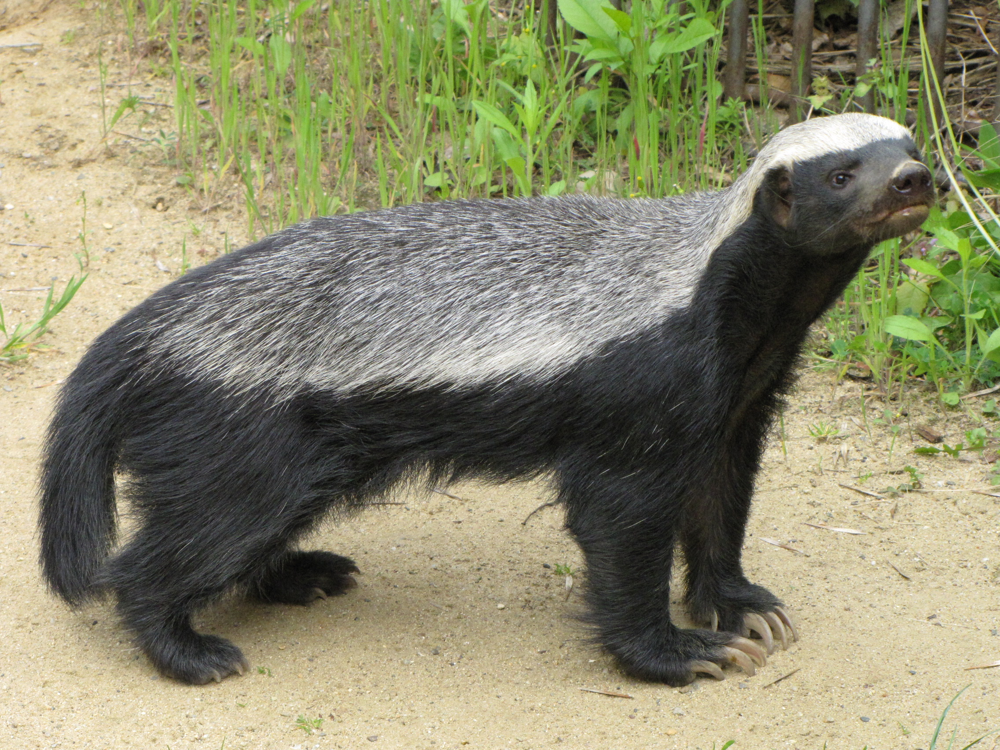

As suggested by both their common and scientific names (Mellivora capensis means "honey eater of the Cape"), honey badgers have always been associated with bees. Apart from man, they are the most destructive mammalian predators of honeybees in Africa and they can and do cause substantial losses to both traditional and commercial beekeepers. While honey is not a necessary part of a honey badger's diet, the highly nutritious bee brood is a sought after delicacy and this brings them into conflict with beekeepers.

Taxonomy
is the only species in the mustelid subfamily Mellivorinae and its only genus Mellivora. Despite its name, the honey badger does not closely resemble other badger species; instead, it bears more anatomical similarities to weasels.
Subspecies
As of 2005, 12 subspecies are recognised. Points taken into consideration in assigning different subspecies include size and the extent of whiteness or greyness on the back.
- Cape ratel - Mellivora capensis capensis - South and southwestern Africa
- Ethiopian ratel - Mellivora capensis abyssinica - Ethiopia
- Turkmenian ratel - Mellivora capensis buechneri - Turkmenistan
- Lake Chad ratel - Mellivora capensis concisa - Sahel and Sudan zones, as far as Somaliland
- Black ratel - Mellivora capensis cottoni - Ghana, northeastern Congo
- Nepalese ratel - Mellivora capensis inaurita - Nepal and contiguous areas east of it
- Indian ratel - Mellivora capensis indica - Western Middle Asia northward to the Ustyurt Plateau and eastward to Amu Darya
- White-backed ratel - Mellivora capensis leuconota - West Africa, southern Morocco, former French Congo
- Kenyan ratel - Mellivora capensis maxwelli - Kenya
- Arabian ratel - Mellivora capensis pumilio - Hadhramaut, southern Arabia
- Speckled ratel - Mellivora capensis signata - Sierra Leone
- Persian ratel - Mellivora capensis wilsoni - Southwestern Iran and Iraq